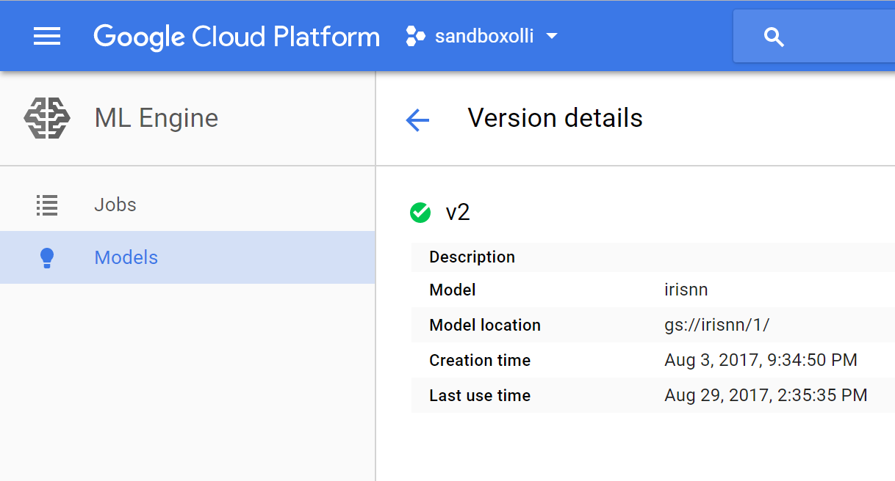

- https://cloudplatform.googleblog.com/2017/07/CIOs-guide-to-data-analytics-and-machine-learning.html?m=1 - PDF hängt in Evernote - Misc Applications: https://medium.com/inside-machine-learning/new-mental-models-for-machine-learning-part-1-7eaa7130fab - https://www.oreilly.com/ideas/from-infinity-to-8-translating-ai-into-real-numbers - http://ai.sigs-datacom.de/i/e4RV3bqWG70FSPGG8jAN3engDWqsIAs3 - https://news.microsoft.com/ai/
Autonomous Cars
- https://www.wired.com/story/this-lumbering-self-driving-truck-is-designed-to-get-hit
Use of GPU

https://twitter.com/chrisalbon/status/907028933693947904?s=03
Deployment
Timeline
- https://twitter.com/wef/status/902093916471689216
Big Data in General
- http://idatassist.com/what-is-the-real-value-of-big-data/
Marketing / Customer Relationship
- Sentiment Analysis in Social Networks (is there a negative Tweet one should take care of)
Warehousing
- Zalando: http://videos.re-work.co/videos/473-deep-learning-for-retail-warehouse-operations
Service
- Spencer, Amsterdamer Flughafen Schiphol Passagieren helfen konnte, ihr Abfluggate zu finden - http://m.faz.net/aktuell/wirtschaft/bosch-investiert-millionen-in-kuenstliche-intelligenz-15156050.amp.html - https://www.welove.ai/de/blog/post/Willkommen-auf-welove.ai.html
Journalism / Reporting
- https://digiday.com/media/washington-posts-robot-reporter-published-500-articles-last-year/?utm_campaign=digidaydis&utm_source=twitter&utm_medium=social
Recommendation Systems
- https://www.wired.co.uk/article/how-do-netflixs-algorithms-work-machine-learning-helps-to-predict-what-viewers-will-like?imm_mid=0f5ddc&cmp=em-data-na-na-newsltr_20170906
Code Generation / Programming
- https://twitter.com/fchollet/status/911250722095632384?s=03 - https://twitter.com/mark_riedl/status/908058551486177280?s=03
Security
- https://medium.com/slalom-engineering/detecting-malicious-requests-with-keras-tensorflow-5d5db06b4f28
Fraud Detection
- https://blog.codecentric.de/en/2017/09/data-science-fraud-detection
- https://www.data2day.de/veranstaltung-6008-skalierbares-machine-learning-mit-apache-spark-in-der-betrugserkennung.html?id=6008
- http://www.data2day.de/2017/material/Baier_Dragiev__Skalierbares_ML_mit_Apache_Spark.pdf
- Seite 5: GOAL
- Seite 7: Nicht Business Rules, sondern ML
Predictive Maintenance
- https://notebooks.azure.com/Microsoft/libraries/PredictiveMaintenance
Ad Analytics
- http://upflow.co/l/nKYK/blog/near-real-time-ad-analytics-powered-by-big-data
Medicine / Healthcare
- https://www.microsoft.com/en-us/research/video/research-focus-project-innereye-assistive-ai-cancer-treatment/?utm_source=t.co&utm_medium=referral
- https://twitter.com/fchollet/status/907650078759829504?s=03
- https://medium.com/inside-machine-learning/top-10-machine-learning-use-cases-part-2-7708ec514c2
- ML for Drug Discovery: https://www.meetup.com/London-Machine-Learning-Meetup/events/242517319/?from=ref
Housing
- https://medium.com/airbnb-engineering/using-machine-learning-to-predict-value-of-homes-on-airbnb-9272d3d4739d?imm_mid=0f4fe5&cmp=em-data-na-na-newsltr_20170802
Automobile
- http://m.faz.net/aktuell/wirtschaft/unternehmen/kuenstliche-intelligenz-30-000-000-000-000-rechenvorgaenge-in-einer-sekunde-15110249.amp.html
Banking
- https://www.exastax.com/deep-learning/ai-automation-for-banking/
General Enterprise
- Motivation: http://upflow.co/l/VW1s/blog/2017/07/28/enterprise-ai - https://www.geberconsulting.com/news/mlenterprise